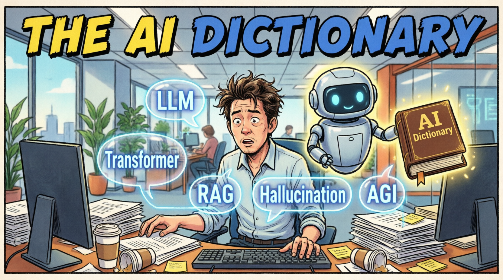

# AI Dictionary of Terms
A curated, living dictionary of **artificial intelligence** and machine learning **terminology** with 160+ definitions explained simply.
Built for **everyone** — from complete beginners to seasoned practitioners.
> **Created and curated by [Alex Nubla](https://www.linkedin.com/in/alexnubla/).**
> **💡 Goal:** To promote AI literacy by providing clear, accessible explanations of complex AI concepts.
> Every term includes a **"Simple Version"** written in plain English — no jargon, no assumptions — so anyone can understand, regardless of their technical background.
> **🎯 Scope & Rigor:** We strictly exclude "confabulations," marketing fluff, or made-up buzzwords that lack real currency in standard AI terminology. This dictionary focuses exclusively on validated, widely recognized concepts with established technical definitions.


---
## 📂 Browse by Category
*(... keep all your existing Category details exactly as you have them ...)*
---
## 🔤 Browse All Terms (A-Z)
*(... keep your existing A-Z table exactly as you have it ...)*
🔍 **[Search the Dictionary](/ai-dictionary/search.html)** | 📚 **[View All Terms](/ai-dictionary/terms/)**
---
## ❓ Frequently Asked Questions
**What is an AI dictionary?**
An AI dictionary is a curated reference resource that defines artificial intelligence and machine learning terminology in plain language, making complex concepts accessible to everyone.
**How many terms are in this AI terminology glossary?**
This living dictionary contains 160+ AI and machine learning terms across 8 specialized categories, ranging from foundational Architecture to Legal AI and Healthcare AI.
**Who is this AI dictionary for?**
It is built for everyone. Every term includes a "Simple Version" written in plain English for beginners, alongside detailed technical definitions and code examples for developers and practitioners.
**Is this AI dictionary free to use?**
Yes! This is an open-source project licensed under the MIT License. You are free to use, share, and contribute to this machine learning glossary.
---
### 🤝 Contributing & License
Want to add a term? Check out our [Contributing Guidelines](CONTRIBUTING.md).
This project is open source under the [MIT License](LICENSE).